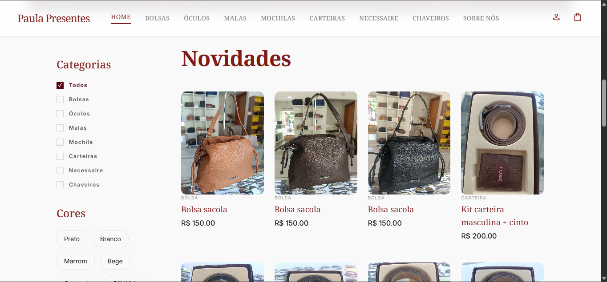
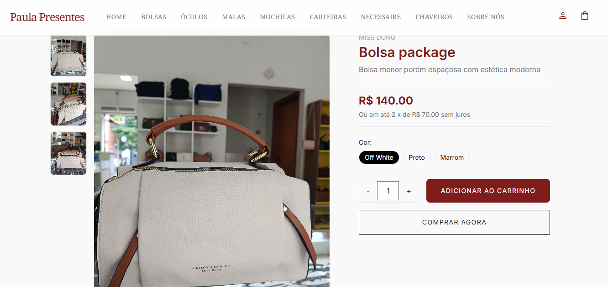
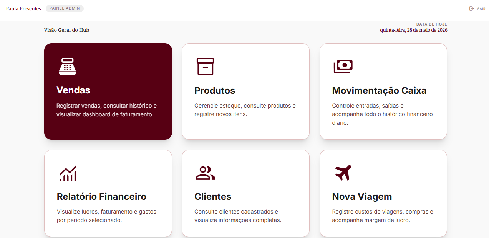

Desenvolvedora de software multiplataforma com foco em arquitetura .NET e desenvolvimento de aplicações, com experiência prática em ASP.NET Core MVC, aplicações web e mobile, APIs REST e soluções orientadas a banco de dados. Atuação adicional em sistemas embarcados, análise de dados agrícolas, telemetria e automação de processos.
Caroline Vitória Paneco
Olímpia, SP • Brasil
> stack = [.NET MVC, C#, Python, React 19, Supabase, Power BI]
// Foco: Eficiência, escalabilidade e valor comercial real.



Automatizar e profissionalizar as operações de vendas online de artigos para presentes, substituindo pedidos manuais por um fluxo transacional centralizado, seguro e com gestão em tempo real.
Estruturei o projeto no padrão MVC com separação em camadas, modelagem relacional no PostgreSQL com Entity Framework Core, autenticação com proteção CSRF, carrinho persistido por sessão e painel administrativo para controle de vendas, estoque e fechamento de caixa.
C# • ASP.NET Core MVC • EF Core • PostgreSQL • Modelagem Relacional • Segurança (CSRF/Auth) • Arquitetura em Camadas • Tailwind CSS.
Eliminar a fricção e os erros no atendimento via WhatsApp, permitindo que os clientes montem bolos artesanais com combinações personalizadas e automatizando a esteira de pedidos da confeitaria.
Realizei análise de requisitos com a cliente, projetei um fluxo interativo para seleção de massas, múltiplos recheios, coberturas e agendamento de data de entrega. Construí o painel administrativo de controle de pedidos, ficha de clientes e estoque de insumos.
JavaScript (ES6+) • Lógica de Precificação Dinâmica • UX/UI para Pedidos Customizados • Gestão de Estoque e Fluxo de Produção • Validação de Dados.
Criar uma loja virtual autoral com navegação contínua e ultraveloz para o público jovem de streetwear, garantindo carregamento instantâneo, guia interativa de tamanhos e experiência de compra fluida.
Utilizei TanStack Start com React 19 e Vite 8 para Server-Side Rendering de alta performance. Modelei o banco no Supabase via Drizzle ORM com tipagem fim a fim, implementei busca com debounce, carrinho persistente no localStorage, cupons promocionais e checkout simulado em 3 etapas com validação Zod.
React 19 • TanStack Start & Router • Supabase • Drizzle ORM • Zod Schemas • Vitest • Radix UI • Tailwind CSS v4.
Portal de IA • IA Nossa
Gateway Corporativo Gemini & OpenAIViabilizar o uso corporativo de Inteligência Artificial sem expor chaves de API nem violar políticas de segurança de dados, garantindo privacidade e controle centralizado.
Construí um gateway seguro em Node.js isolando as credenciais no servidor. Implementei streaming token a token via Server-Sent Events (SSE) para respostas em tempo real e criei suporte unificado tanto para o SDK oficial Gemini quanto para modelos compatíveis com OpenAI.
Node.js • Express • Google Gemini API • Server-Sent Events (SSE) • Streaming HTTP • Segurança de Chaves no Servidor • Deploy em Nuvem.
IdeaFlow • Spark Mindful Flow
Decomposição por IA & Métricas RechartsAcabar com a sobrecarga de ideias acumuladas e a procrastinação inicial, decompondo ideias complexas em ações imediatas de 15 minutos e rastreando o histórico de decisões.
Modelei um funil em 5 estágios, criei engenharia de prompts para geração de micro-ações com IA, implementei a linha do tempo de mudanças de rota (pivôs) com campos de motivo, desenvolvi dashboards comparativos em Recharts e sincronização com Google Calendar / exportação .ics.
React 19 • Recharts • Engenharia de Prompts • Gestão de Estado Reativo • Integração de Calendários (.ics) • Vaul Drawers.
Telemetria Agrícola • Frotas
Colhedora, Tratos, Plantadora & IndexedDBPermitir o processamento diário e análise de telemetria de frotas agrícolas pesadas diretamente no navegador em campo, sem depender de internet e sem perder o histórico anterior de dados.
Desenvolvi uma arquitetura modular com persistência incremental no IndexedDB, permitindo adição diária de logs por equipamento. Modelei o cruzamento de velocidade, motor, blocos de cana e registros pluviométricos.
JavaScript Moderno • IndexedDB (NoSQL Local) • Arquitetura Modular • Análise de Telemetria de Campo • Offline-First Design.
Robô Leitor • OCR em Lote
Tesseract OCR • Python & FlaskAutomatizar a triagem e extração de dados de pilhas de documentos digitalizados e notas em PDF/imagem, reduzindo o tempo de digitação manual de horas para segundos.
Construí a aplicação em Flask, integrando o motor Tesseract com modelos em português. Desenvolvi pipeline de pré-processamento de imagem para limpeza e contraste, com conversão em lote para planilhas e preparação para ingestão em pipelines de IA.
Python 3 • Flask • Tesseract OCR • Pillow (PIL) • Tratamento de Imagens • Parsing de PDFs • Automação de Processos.
CRUD API • SistemaWeb
ASP.NET Core • React • SQL ServerFornecer uma espinha dorsal corporativa padronizada para gestão de inventário e produtos, aplicando arquitetura em camadas e desacoplamento entre frontend e backend.
Estruturei a Web API com injeção de dependência nativa, validações de requisição com Data Annotations e tratamento global de exceções. Modelei o banco no SQL Server com EF Core e criei a interface cliente em React com hooks customizados.
C# • ASP.NET Core API • Entity Framework Core • SQL Server • React • Injeção de Dependência • RESTful Standards.
Centralizar e otimizar a emissão, alocação e acompanhamento em campo de ordens de serviço, insumos de estoque e equipes operacionais com controle geográfico em tempo real.
Construí a aplicação utilizando React 19 com TanStack Router para roteamento tipado fim a fim. Integrei o Supabase para autenticação e banco relacional, a API do Google Maps para georreferenciamento de atendimentos, formulários reativos com React Hook Form + validação Zod, e dashboards analíticos com Recharts.
React 19 • TanStack Router • Supabase • Google Maps API • Recharts • Zod • React Hook Form • Radix UI • Tailwind CSS v4.
Criar uma vitrine digital imersiva e de alta conversão para reserva e cotação de pacotes exclusivos nos maiores resorts termais do Brasil (Olímpia, Barretos, Caldas Novas).
Implementei TanStack Router com React 19 e Vite, estruturando um catálogo dinâmico de resorts com filtros de capacidade, amenidades e pensão. Desenvolvi animações de rolagem e transições suaves com Framer Motion, além de um cotador interativo que gera o lead diretamente no WhatsApp com dados de reserva pré-formatados.
React 19 • TanStack Router • Framer Motion • Parallax UI • Tailwind CSS v4 • Geração de Leads • TypeScript.
Oferecer uma experiência de catálogo refinado e agendamento digital para studio de estética e nail design de luxo, eliminando dúvidas sobre serviços e otimizando o fluxo de pré-atendimento.
Arquitetei o projeto com TanStack Start e SSR alimentado por Nitro e React 19, garantindo carregamento instantâneo. Desenvolvi uma gaveta interativa lateral estilo sacola de procedimentos para seleção múltipla, cálculo automático de tempo/valores, otimização de imagens com Sharp e testes unitários com Vitest.
React 19 • TanStack Start (SSR) • Nitro • TanStack Query • Vitest • Motion • Radix UI • Sharp • UX/UI Editorial.
Transmitir a atmosfera rústica, acolhedora e artesanal da forneria italiana em Olímpia/SP, apresentando pizzas de longa fermentação, adega de vinhos e conectando clientes ao cardápio digital e salão.
Desenvolvi uma interface fluida com paleta artesanal customizada (Terracotta, Gold e Farinha), combinando Cormorant Garamond com Plus Jakarta Sans. Apliquei técnicas de glassmorphism quente, efeitos de luz de forno com CSS keyframes, galeria fotográfica do salão e integração com cardápio de delivery oficial e geolocalização.
HTML5 Semântico • CSS3 Avançado • Paletas Personalizadas no Tailwind • Animações Keyframe • Glassmorphism • Design de Alta Fidelidade.
Criar uma experiência estética imersiva e interativa para studio de cílios, sobrancelhas e estética facial, combinando microinterações táteis com agendamento direto de procedimentos.
Desenvolvi uma engine em Canvas 2D renderizando partículas de poeira estelar dourada que reagem à física do mouse com gravidade e dispersão. Projetei efeito de parallax 3D no hero através de transformações de perspectiva no cursor, carrinho reativo de procedimentos com cálculo de orçamento e acionamento direto via WhatsApp.
HTML5 Canvas • Física de Partículas em JS • Matemática Vetorial • Efeitos Parallax 3D • JavaScript Modular • Tailwind CSS.
Tecnologias, linguagens e frameworks aplicados na construção de arquiteturas escaláveis, desde o backend .NET a modelos de dados, telemetria e interfaces reativas.
Foco em robustez, alta disponibilidade e padrões arquiteturais corporativos.
Aplicações reativas, interfaces adaptativas e desenvolvimento mobile nativo/híbrido.
Decisões guiadas por dados, fluxos de OCR, inteligência generativa e telemetria.
Persistência estruturada, normalização, consultas eficientes e integridade relacional.
Integração contínua, governança de código e entregas ágeis orientadas a valor.
Mentalidade de dona, disciplina e comunicação técnica internacional.
Tereos
AGTech
FATEC de Olímpia
Foco em arquitetura web, mobile, computação em nuvem, metodologias ágeis e desenvolvimento multiplataforma moderno.
Universidade Paulista (UNIP)
Formação sólida em algoritmos, modelagem de banco de dados relacional, engenharia de software e arquitetura de sistemas.
Seja para uma oportunidade de desenvolvimento de software, consultoria em sistemas, automação ou uma troca técnica de ideias — entre em contato diretamente.